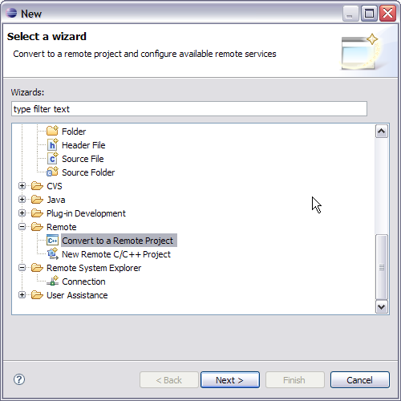
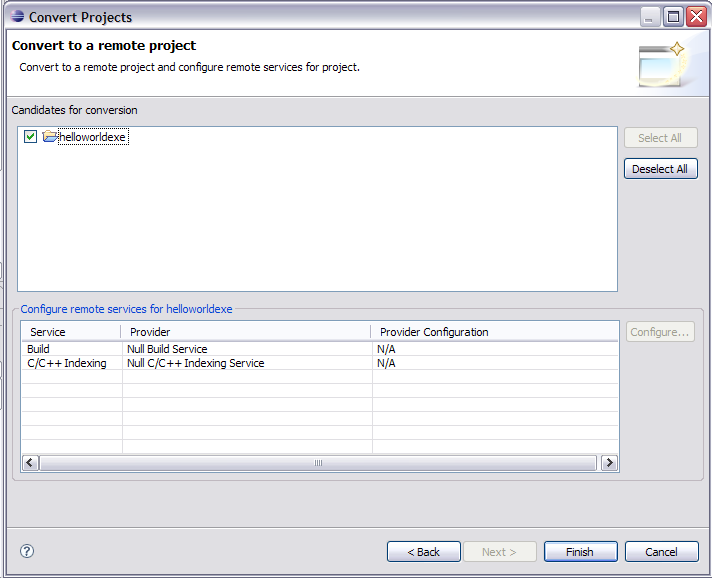

Converting to a remote project
You can convert a local project into a remote project and setup the available
remote service providers at the same time.
To convert a local project to a remote project:
- Click File > New > Other. Select Convert to a Remote Project under Remote.

- Click Next.
- In the Candidates for conversion list, select the projects to convert.

- Configure the available list of service and service providers in the table below.
- Click Finish.